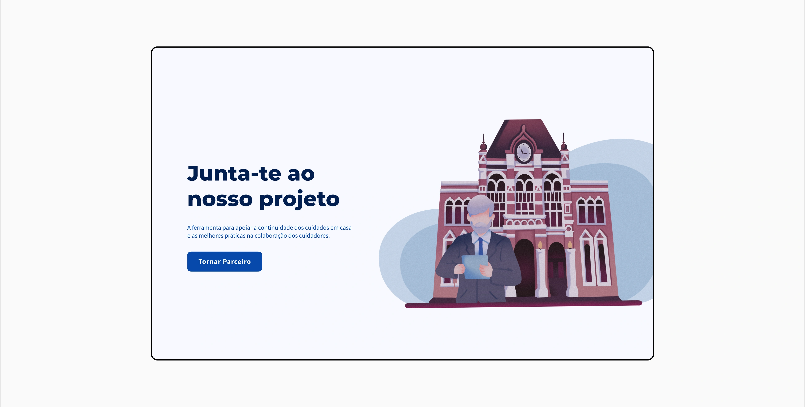
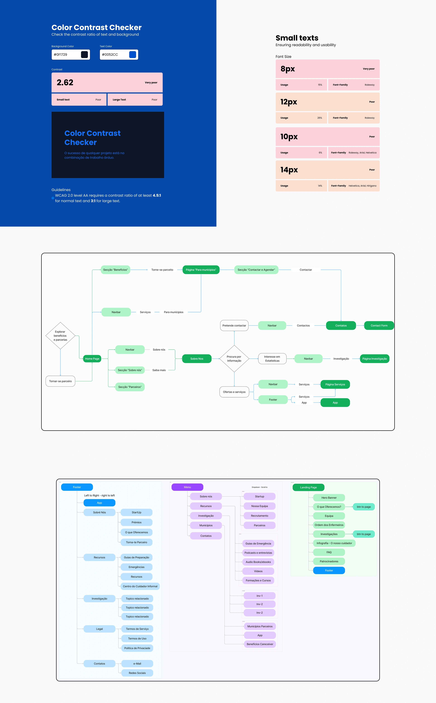
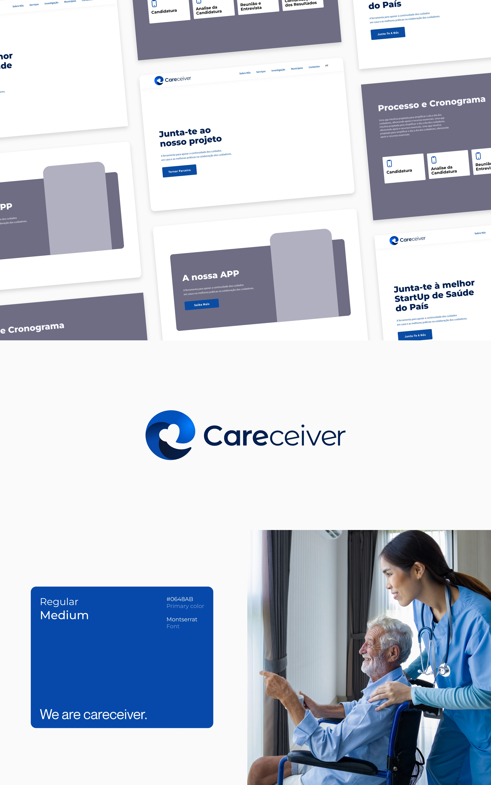

Next project
ESAD.CR Event
Mobile App Design

Careceiver is a startup focused on supporting informal caregivers. They partnered with my college to collaborate with students on a rebranding project and the design of a digital ecosystem. Due to the project’s scale, the class was divided into different departments. I was part of the UX/UI Design team, where I contributed to research, wireframing, interface design, and usability testing.



Next project
Mobile App Design